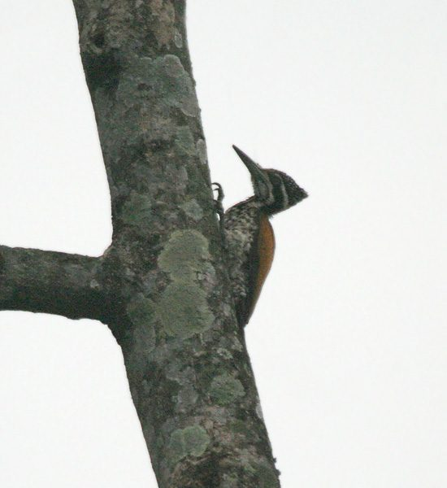

हिमालयन फ्लेमबैकHimalayan Flameback
Dinopium shorii · Picidae · BRD-0292

- Scientific name वैज्ञानिक नाम
- Dinopium shorii (Vigors, 1831)
- Family कुल
- Picidae
- Hindi हिंदी
- हिमालयन फ्लेमबैक
- Local names स्थानीय नाम
- himalayan flameback, himalayan flembaik, himalayan golden-backed woodpecker, himalayan teen-ungli kathphodva
- Status here यहाँ की स्थिति
- native
- Movement आवागमन
- Resident, here all year
- Known from कहाँ दर्ज
- Others have published records from the wider Awadh–Purvanchal plain, none yet from Basti–Ayodhya अवध–पूर्वांचल से दूसरों के प्रकाशित अभिलेख, बस्ती–अयोध्या से अभी नहीं
- IUCN IUCN
- LC
- Review समीक्षा
- not yet reviewed
When to look कब देखें
Present all year. साल भर मौजूद।
Tell it apart from इनसे अलग पहचानें
हिमालयन फ्लेमबैक / Himalayan Flameback
Dinopium shorii (Vigors, 1831) — Picidae
हिमालयन फ्लेमबैक — तराई और शिवालिक के साल जंगलों में रहने वाला तीन उंगलियों वाला सुनहरी पीठ का खूबसूरत कठफोड़वा है। इसके गले के बीच में दोहरी काली धारी और उसके बीच में भूरापन होता है। नर की कलगी लाल और मादा की कलगी पर सफेद लकीरें होती हैं। यह सूखे पेड़ों के तनों पर चोंच मारकर लकड़ी के भीतर छिपे कीड़े निकालता है।
Quick Identification त्वरित पहचान
| Feature | Description |
|---|---|
| Throat pattern | Double black line running down the centre of the throat enclosing a pale brownish patch |
| Crown and crest | Bright scarlet-crimson in male; black crown with long white drop-shaped streaks in female |
| Mantle and back | Brilliant golden-olive to orange-gold upperparts with scarlet wash across lower back and rump |
| Underparts | Buff-white underbody with black-bordered scales, creating bold chain-like markings on breast |
| Feet morphology | Tridactyl foot arrangement possessing only three functional toes (two forward, one rear) |
Large golden-backed woodpecker distinguished from similar flamebacks by the characteristic throat pattern showing two thin parallel black lines enclosing a pale brown median strip. In addition, adult females possess elongated white streaks on a brownish-black crown rather than circular spots.
Field tip: Look on large mature trunks in moist sal forests; listen for its rapid drumming bursts echoing through forest corridors.
हिंदी: सुनहरी-पीली पीठ और लाल कमर वाला यह बड़ा कठफोड़वा गले पर दोहरी काली लकीर से पहचाना जाता है जिसके बीच में भूरा रंग होता है। इसके पैर में केवल तीन उंगलियां होती हैं। मादा के सिर पर सफेद धारियां होती हैं।
Morphology आकारिकी
Biometrics as given by Baker (1927) as Dinopicus shorii:
| Measurement | Value | Source |
|---|---|---|
| Wing | 146 to 162 mm | Baker (1927) as Dinopicus shorii |
| Tail | 95 to 103 mm | Baker (1927) as Dinopicus shorii |
| Tarsus | 23 to 24 mm | Baker (1927) as Dinopicus shorii |
| Culmen | 32 to 36 mm | Baker (1927) as Dinopicus shorii |
Adult male features brilliant crimson crown and elongated occipital crest, the bases of crown feathers being pale grey to white. Mantle and upper wing-coverts are rich golden-olive with orange highlights; lower back and rump are dazzling crimson. Upper breast is buffy-white boldly scaled with black margins; lower abdomen shows fainter brown squamations. Soft parts: iris is reddish-brown to crimson; bill is dark slaty to blackish; legs and feet are dull plumbeous to greenish-brown. Female differs in having a brownish fore-crown and black crest marked with prominent white streaks.
Vocalisations. A shrill, chattering whinnying call uttered in flight, along with a loud single kluk uttered while ascending vertical tree trunks.
हिंदी: इसके पंख मजबूत और पूंछ कड़ी होती है जो तने पर चढ़ते समय टेक का काम करती है (Baker 1927 as Dinopicus shorii)। नर के सिर पर गहरा लाल ताज होता है और आंखें लाल-भूरी होती हैं। चोंच स्लेटी-काली और मजबूत होती है।
Behaviour & Ecology व्यवहार और पारिस्थितिकी
Maintains strong fidelity to mature, structurally intact forest stands, avoiding open degraded scrub. It climbs vertical tree boles in rapid jerky bounds, often tapping with its chisel-tipped bill to detect hollow pockets housing beetle larvae. It uses its stiffened spiny tail feathers as a rigid tripod support against bark fissures. Birds move either singly or in pairs, occasionally joining mixed-species foraging flocks that scour sub-canopy woodland strata. Flight between distant trees is undulating with closed-wing swoops.
हिंदी: यह पुराने घने जंगलों में ऊंचे तनों पर रहता है और खुले खेतों में कम जाता है। यह तने पर नीचे से ऊपर की ओर तेजी से चढ़ता है और चोंच से लकड़ी ठोककर खोखली जगह ढूंढता है। इसकी पूंछ के कड़े पर तने पर टिकने में मदद करते हैं।
Life Cycle / Phenology जीवन चक्र
Breeding occurs across the sub-Himalayan zone between March and May. Courting pairs vocalize actively and engage in ritualized head-bobbing displays along dead tree boughs. Both sexes excavate the nest cavity, selecting decaying branches or dead boles of forest trees such as sal or silk-cotton. The female deposits a clutch of glossy white oval eggs upon bare wood chips at the bottom of the hollow. Both parents share diurnal incubation duties and jointly provision the growing chicks.
हिंदी: मार्च से मई के महीनों में यह प्रजनन करता है। नर और मादा दोनों मिलकर सूखे या कमजोर पेड़ के तने में चोंच मारकर गहरा छेद बनाते हैं। घोंसले के भीतर लकड़ी के बुरादे पर अंडे दिए जाते हैं। दोनों मिलकर बच्चों को पालते हैं।
Host Plants or Prey आहार
Mainly insectivorous, specializing in wood-boring beetle grubs (Cerambycidae, Buprestidae), pupae, and carpenter ants extracted from deep sapwood tunnels. In sub-Himalayan forest tracts it forages extensively across trunks of Sal (Shorea robusta) and riparian trees. It also consumes subterranean termites when accessible on basal trunks and sips sap from freshly drilled bark sapwells.
हिंदी: इसका मुख्य आहार लकड़ी के अंदर रहने वाले भृंगों (बीटल) के लार्वा और चींटियां हैं। साल के बड़े पेड़ों के तनों से यह अपनी लंबी चिपचिपी जीभ डालकर कीड़े खींच निकालता है। कभी-कभी यह पेड़ों का मीठा रस भी पीता है।
Predators / Natural Enemies शत्रु
Forest raptors such as crested goshawks, bazas, and forest owlets prey upon adults. Nest hollows face danger from arboreal predators, including tree vipers, yellow-throated martens, and monitor lizards. Cavity squabbles occur occasionally with parakeets and larger woodpeckers.
हिंदी: शिकरा और बड़े जंगली उल्लू इसका शिकार कर सकते हैं। पेड़ के कोटर में रखे अंडों को जंगली बिल्लियां, गोह और पेड़ पर चढ़ने वाले सांप खा जाते हैं। तोते भी कभी-कभी इसके कोटर पर कब्जा करने की कोशिश करते हैं।
Agricultural / Human Relevance कृषि प्रासंगिकता
Protected under the Wildlife (Protection) Act 1972. It performs crucial ecosystem services within timber belts and buffer zone forests by destroying destructive wood-boring larvae that undermine valuable forest timber. It causes absolutely no injury to agricultural crops or fruit plantations.
हिंदी: वन्यजीव (संरक्षण) अधिनियम 1972 के तहत संरक्षित। यह साल और शीशम के जंगलों में लकड़ी को नष्ट करने वाले कीड़ों को खाकर वन संपदा की रक्षा करता है। यह खेती की फसलों को कोई नुकसान नहीं पहुंचाता।
Expected Locally स्थानीय रूप से अपेक्षित
Not a field record. Written from published accounts for eastern Uttar Pradesh. No confirmed local sighting yet — if you have seen it, that is what the atlas needs.
अभी तक स्थानीय पुष्टि नहीं। यह विवरण प्रकाशित स्रोतों से है, किसी अवलोकन से नहीं।
Inhabits mature sub-Himalayan deciduous forests, sal belts, and dense riverine corridors across the northern plain margins. Observers in eastern Uttar Pradesh should look in dense woodland tracts along the northern border adjoining the Nepal Terai and protected riverine forests of the Rapti drainage.
GBIF holds published records from the wider Awadh–Purvanchal plain, none yet from Basti–Ayodhya.
A first local record for the atlas would be a clear photograph showing plumage details, accompanied by date, time, and precise location coordinates sent through the project's About page.
हिंदी: यह पक्षी तराई के साल जंगलों और राप्ती नदी के कछार में पाए जाने वाले पुराने घने पेड़ों में मिल सकता है। बस्ती जिले के उत्तरी छोर पर नेपाल सीमा से लगे वन क्षेत्रों में इसकी उपस्थिति संभावित है।
Distribution वितरण
Global range: Confined to northern South Asia along the Himalayan foothills, from Uttarakhand through Nepal, Bhutan, and northeast India to northern Myanmar.
In India: Sub-Himalayan tract from Dehradun and Kumaon through the Uttar Pradesh and Bihar Terai to Assam, Meghalaya, and Arunachal Pradesh.
In Uttar Pradesh: Restricted to northern forest belts of the Terai, including Dudhwa and adjoining sal tracts.
In Basti district / eastern UP: Expected along the northern fringes of the district in mature riverine and forest buffer tracts contiguous with Terai forests.
हिंदी: इसका वैश्विक विस्तार हिमालय की तराई पट्टी में भारत, नेपाल, भूटान और म्यांमार तक है। उत्तर प्रदेश में यह मुख्य रूप से दुधवा और तराई के घने साल वनों में मिलता है।
Research Questions शोध प्रश्न
- What microhabitat characteristics distinguish the foraging niches of Dinopium shorii and Dinopium benghalense where their ranges overlap?
- Does the presence of mature Shorea robusta stands serve as an obligate ecological predictor for this species in eastern Uttar Pradesh? / क्या पूर्वी उत्तर प्रदेश में इस पक्षी की मौजूदगी साल के पुराने जंगलों पर निर्भर है?
- How severely does commercial extraction of dead standing wood affect cavity availability for this flameback?
- A student can observe a woodpecker in a forest patch to check whether its throat shows a single or double black line / क्या कोई छात्र जंगल में कठफोड़वे के गले की काली लकीरों को ध्यान से देख सकता है?
- What is the minimum forest fragment size capable of sustaining a breeding pair of Himalayan flamebacks?
हिंदी: सूखे और मृत पेड़ों को जंगल से हटाने पर इस पक्षी के रहने की जगह पर क्या असर होता है? यह पक्षी आम कठफोड़वे से किस प्रकार अलग जंगल में अपना क्षेत्र चुनता है?
Similar Species मिलती-जुलती प्रजातियाँ
| Species | How to tell apart | हिंदी | |
|---|---|---|---|
| Black-rumped Flameback \ | Dinopium benghalense | Single black line down white throat, black nape and mantle without brown wash on throat | ब्लैक-रम्प्ड फ्लेमबैक के सफेद गले पर केवल एक काली धारी होती है और गर्दन पीछे से काली होती है |
| Yellow-crowned Woodpecker \ | Leiopicus mahrattensis | Much smaller size, checkered black-and-white upperparts, and distinct four-toed feet | येलो-क्राउन्ड कठफोड़वा काफी छोटा होता है और उसके पैर में चार उंगलियां होती हैं |
Field rule: Golden-backed woodpecker with three toes, double black line enclosing a pale brownish throat streak, and white-streaked crown in female.
हिंदी: तीन उंगलियों वाले पैर, पीठ पर सुनहरी चमक और गले पर भूरे रंग को घेरे हुए दोहरी काली लकीर इसकी मुख्य पहचान है।
Taxonomy & Classification वर्गीकरण
Original description. Vigors (1831) — see GBIF.
Subspecies. Polytypic species; the western Himalayan and northern plain populations belong to the nominate race Dinopium shorii shorii. Baker (1927) treats it as Dinopicus shorii.
Family and order placement. Belongs to the family Picidae, order Piciformes, class Aves.
Phylogenetic notes. Member of the genus Dinopium, characterized by three-toed morphology and golden back plumage, closely allied to Meiglyptes.
IUCN status rationale. Assessed globally as Least Concern (LC) by IUCN (BirdLife International 2024) due to its substantial range along the Himalayan foothills.
हिंदी: इस पक्षी का वैज्ञानिक विवरण विगोर्स ने 1831 में दिया था। यह पिसिडी कुल का सदस्य है और प्रकृति संरक्षण संघ की कम चिंताजनक श्रेणी में है।
Photo Gallery फोटो गैलरी
No photos yet — add field photos to media/species/himalayan_flameback/ and run node scripts/sync_photos.js.
Photos needed आवश्यक फोटो
- [ ] Adult male showing crimson crest and double throat streak (वयस्क नर की लाल कलगी और गले की दोहरी काली धारी)
- [ ] Adult female showing white-streaked dark crown (वयस्क मादा के सिर की सफेद धारियां)
- [ ] Close-up of tridactyl foot arrangement on tree bark (पेड़ के तने पर तीन उंगलियों वाले पंजे का दृश्य)
References संदर्भ
- Original description: Vigors, 1831 — see GBIF.
- Baker, E. C. S. (1927). The Fauna of British India, Including Ceylon and Burma: Birds. 2nd ed., Vol. 4. Taylor & Francis, London. (as Dinopicus shorii).
- Ali, S. & Ripley, S. D. (1983). Handbook of the Birds of India and Pakistan. Compact ed. Oxford University Press, New Delhi.
- Grimmett, R., Inskipp, C. & Inskipp, T. (2011). Birds of the Indian Subcontinent. 2nd ed. Christopher Helm, London.
- Rasmussen, P. C. & Anderton, J. C. (2012). Birds of South Asia: The Ripley Guide. Vols. 1–2. 2nd ed. Smithsonian Institution and Lynx Edicions.
- IUCN Red List of Threatened Species: Dinopium shorii, 2024.
- GBIF Occurrence Data — Dinopium shorii, India (2025).
Source file: species/fauna/birds/himalayan_flameback.md